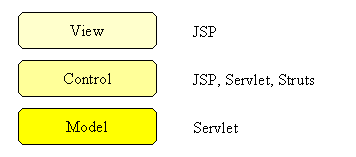
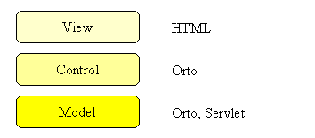
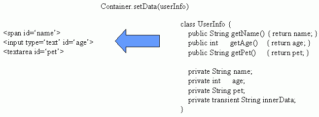
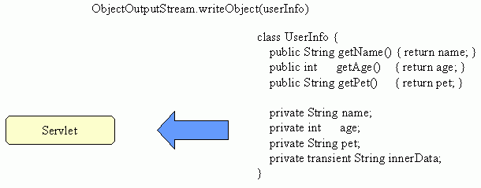
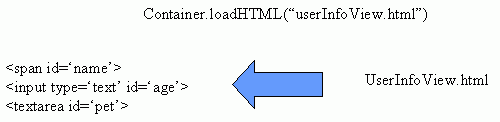

この文章が難しすぎると感じたら、 掲示板までご意見ください。 なお、ここに書いてあるのは、僕が考える限りのベストな方法であるに過ぎないので、 この方法に従う必要はぜんぜんありません。
オブジェクト指向による GUI プログラミングにおいて、 最も重要なのは、プログラムをモデル・ビュー・コントロールに分けることです。 Model View Control は略して MVC とも言われます。 それぞれ、
| ビュー | 表示・ユーザーへの入出力面 |
| コントロール | 全体の流れの制御 |
| モデル | データを管理 |
を受け持ちます。 モデル・ビュー・コントロールに分けることのメリットは、いろいろありますが、最大の２つは、
プログラミングは予想外のことが発生しやすく、試行錯誤・変更に対するコストは なるべく小さくすること、つまり、プログラムの柔軟性をあげることが 全体の開発の手間を減らすことにつながります。つまり楽になるんです！
柔軟性をあげるには、さらに、ビュー・コントロール・モデル間の依存関係が、 ビュー → コントロール → モデルにすることが大切です。
例えば、名簿ソフトを作っていて、新たに、「生まれた国」という情報を管理したく なったとしましょう。その時は、モデルにも、ビューにもその変更を追加しなくてはなりません。 しかし、「生まれた国」の入力方式（つまり、ビューの変更）を フリー記述方式から選択方式に変更したとしても、モデルの変更は必要ありません。
つまり、ビュー → コントロール → モデルの範囲内で、依存関係は収めることが可能であり、 不必要な逆向きの依存関係を作らないことが大切です。モデルとビューが相互に依存していたり すると、ビューを変更したときに、モデルまで変更しなくてはならなく、 変更に対する手間が大きくなります。また、相互依存が網の目のようにはびこると、 全体像が見えにくくなり、変更時に手間がかかります。
従来の Servlet のプログラミングでは、 これが以下のように分かれていました。

Orto では次のようになります。

Servlet/JSP 方式では、JSP の中に、本来コントロールの領域であるはずのものが 紛れ込んでいて、それを除去するためのいろいろな工夫が Struts をはじめ、 なされていますが、なかなか完璧にはいっていません。
Orto では、普通のアプリケーション製作以上に、モデル・ビュー・コントロールの管理が きれいに出来ます。では、具体的に、Orto アプリの作り方を見ていきましょう。
Orto アプリを作るにあたって、まず、外見から作りましょう。 HTML で作ります。Dreamweaver のようなオーサリングツールを使っても良いです。 この過程ではプログラミングは不要なので、デザイナーさんでも作れます。
Orto では、ID 属性を目印に操作します。全部のタグに付けてもかまわないですが、 使う可能性のあるのに限ってつけるだけでも当然かまわないです。
表示されている情報のうち、プログラムで管理する必要がある情報が存在する場合は、 そのモデルを作りましょう。
ここで、ビューと今作ったモデルを結ぶので役立つのが、 Container.getData() と Container.setData() です。

今、作ったモデルをサーバーに保存したり、保存したものを読み出したいときは、 ObjectInputStream と ObjectOutputStream を使えば、そのまま読み書きできます。 その時、変数を transient にしておけば、通信しません。

そして、最後にコントロールを作り、全体をつなげば完成です。 その時、HTML ファイルは、LoadableContainer.loadHTML() で読み込んで表示が出来ます。

あとは、イベントリスナーを作り、それに対する処理を作るだけです。
いかがでしょうか。Orto では、モデル・ビュー・コントロールの管理が 非常にきれいに出来ることがお分かりいただけたのではないでしょうか！ ぜひプログラミングは楽して、楽しんでください。